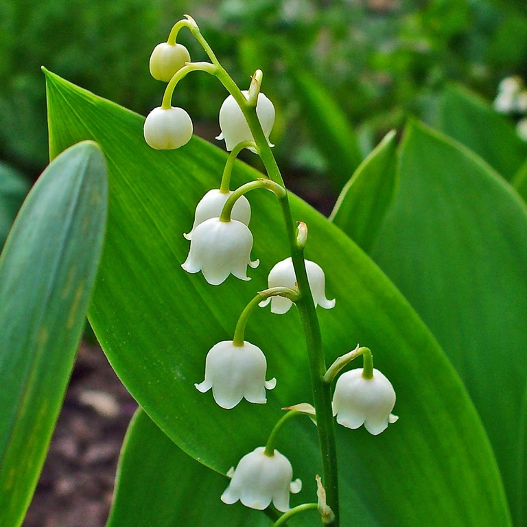

Convallaria majalis
Common name
Lily of the Valley
Deutscher Name
Maiglöckchen (May bells)
Family
Asparagaceae
Family common name
Asparagus family
Blooms
April - October
Habitat
Dry, deciduous woods and rocky debris between 600 and 2200 m.
Range Map